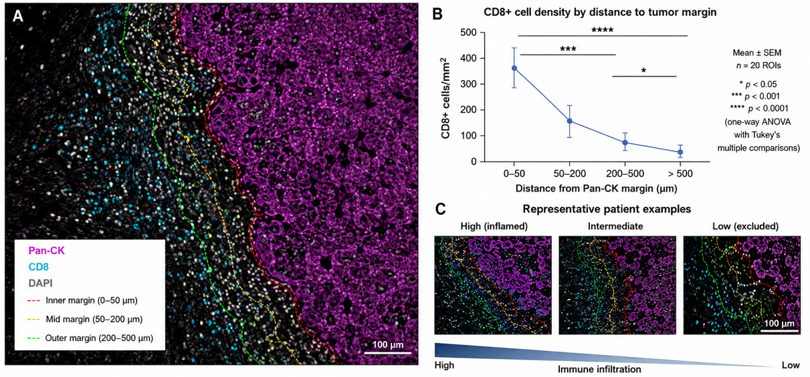
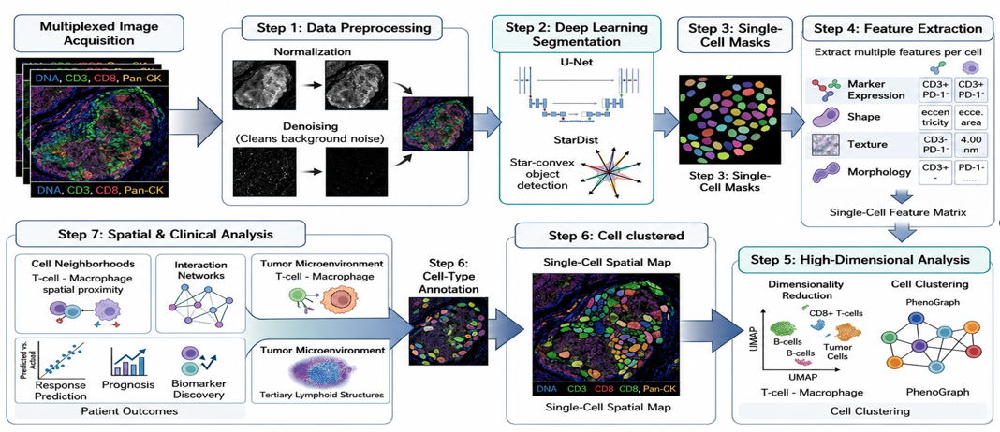

PIONEER CHIATECH PUBLICATION · ARTICLE 20 · e020 |
|---|
Multiplex Immunohistochemistry and Immunophenotyping in Predictive Cancer Biomarker Discovery and Targeted Therapy
M. M. Nengem1 · G. O. Avwioro2 · G. I. Iyare1
1 Department of Medical Laboratory Science, Faculty of Applied Health Sciences, Edo State University Iyamho, Nigeria.
2 Department of Medical Laboratory Science, Faculty of Allied Health Sciences, Delta State University, Abraka, Nigeria.
Author emails: miriamsenwua@gmail.com · avwiorog@gmail.com · iyare.godfrey@edouniversity.edu.ng
ARTICLE TYPE | VOLUME / ISSUE | ELOCATOR |
|---|---|---|
PUBLICATION | ISSUE STATUS | IDENTIFIERS |
ABSTRACT
Precision oncology increasingly depends on assays that preserve both biomarker identity and the spatial context of the tumor microenvironment (TME). Conventional single-plex chromogenic immunohistochemistry remains clinically valuable, but its limited plex and loss of cell-to-cell context can constrain assessment of heterogeneous immune and stromal compartments. This narrative technical review examines multiplex immunohistochemistry and immunofluorescence, high-dimensional immunophenotyping, imaging mass cytometry, and oligonucleotide-barcoded imaging systems as complementary approaches for predictive biomarker discovery and targeted therapy. It also reviews the computational pathway from image acquisition and registration through cell segmentation, phenotyping, dimensionality reduction, spatial statistics, and clinically interpretable tissue architectures. Across the cited literature, spatially resolved multi-marker measurements provide information that is not captured by isolated marker percentages or bulk molecular averages, including immune-cell proximity, exclusion, co-expression, and neighborhood organization. These features can refine hypotheses about response and resistance to immune-checkpoint inhibition and support rational combination-therapy design, while artificial-intelligence methods can improve reproducibility in segmentation and high-dimensional pattern recognition. However, translation into routine diagnostics requires standardized pre-analytics, validated antibody panels, transparent computational pipelines, external clinical validation, data infrastructure, and multidisciplinary quality assurance. Multiplex spatial pathology should therefore be viewed as a rapidly advancing complementary framework for precision oncology whose strongest clinical claims remain dependent on prospective validation and laboratory standardization.
Keywords: multiplex immunohistochemistry; tumor microenvironment; precision oncology; immunophenotyping; spatial analysis; immune checkpoint inhibition
Suggested citation: Nengem, M. M., Avwioro, G. O., & Iyare, G. I. (2026). Multiplex immunohistochemistry and immunophenotyping in predictive cancer biomarker discovery and targeted therapy. CHIATECH Journal, 1(1), e022.
1. Introduction
Over the past two decades, oncology has moved from predominantly non-selective cytotoxic therapy toward treatment strategies that increasingly match biological vulnerabilities to targeted agents and immunotherapies. Precision oncology is built on the recognition that cancers differ substantially across patients in their genomic, molecular, cellular, and microenvironmental characteristics (Qiao et al., 2025). The broader precision-health perspective extends this logic from reactive treatment toward prediction and prevention where reliable molecular and clinical evidence permits (Klein & Hoppe, 2026).
The tumor microenvironment (TME), however, complicates even highly targeted treatment. A tumor is not a homogeneous mass of malignant cells; it is an organized ecosystem containing malignant cells, stromal structures, vascular elements, and diverse immune populations. Consequently, clinically relevant stratification requires more than identifying which molecules are present. It also requires understanding which cells express them, where those cells are located, and how neighboring populations interact. High-resolution spatial and multi-omic approaches are increasingly used to characterize this architecture and to identify candidate predictive patterns that are invisible to bulk measurements alone (Hsu et al., 2025; Liu et al., 2026).
This review focuses on the technical and translational role of multiplex immunohistochemistry (mIHC), multiplex immunofluorescence, and related high-dimensional spatial-proteomic approaches in predictive biomarker discovery and targeted therapy. Particular attention is given to the progression from staining chemistry to cell-resolved spatial data, quantitative modeling, artificial-intelligence-assisted analysis, and the requirements for clinical implementation.
1.1 Limitations of Traditional Single-Plex Immunohistochemistry
Single-plex immunohistochemistry remains a foundational pathology method for tissue diagnosis and biomarker assessment. Its clinical strength lies in robust morphology-linked protein detection, but a one-marker-at-a-time workflow provides only a limited view of heterogeneous tissues. PD-L1 illustrates this limitation: a conventional single stain can quantify expression but may not fully resolve whether the signal arises from malignant cells, macrophages, or other stromal and immune compartments. High-plex imaging of the same tissue section can retain this cellular and architectural context and can support discovery of image-derived biomarkers that are difficult to reconstruct from serial single stains (Lin et al., 2023).
Conventional chromogenic multiplexing also faces practical constraints from color overlap, steric interference, and the difficulty of resolving complex co-expression patterns on the same cell. These constraints matter when the biological question depends on compound phenotypes, such as activation and exhaustion states within cytotoxic T-cell populations. Multiplex fluorescence and other high-parameter methods address this problem by separating detection channels and preserving the spatial relationship among multiple markers (Harms et al., 2023).
1.2 Spatial Architecture of the Tumor Microenvironment
The spatial organization of immune and stromal populations can influence whether an antitumor immune response is physically able to engage malignant cells. CD8+ cytotoxic T lymphocytes, for example, must reach tumor-associated targets rather than merely be present somewhere in the tissue. Conversely, regulatory T cells, suppressive myeloid populations, and dense stromal structures may contribute to immune-excluded or immune-desert configurations. Recent spatial studies have shown that the location and organization of immune populations can be associated with survival and response to therapy, supporting the biological value of tissue geography in addition to cell counts (Greenwald et al., 2026; Wang et al., 2026).
Bulk RNA sequencing, mass spectrometry, and other homogenizing assays can provide powerful molecular averages, but they do not intrinsically preserve the original coordinates of individual cells. Spatial profiling complements these methods by retaining tissue structure and enabling direct measurement of proximity, exclusion, infiltration, and neighborhood composition. Figure 1 illustrates a distance-based representation of CD8+ T-cell density relative to a Pan-CK-defined tumor margin, while Figure 2 emphasizes the physical arrangement of tumor, effector, suppressive, and stromal compartments.

Figure 1. Spatial distribution of CD8+ T cells relative to Pan-CK-defined tumor margins. (A) Multiplex immunofluorescence depicting Pan-CK, CD8, and DAPI with distance zones from the tumor margin. (B) Example distance-based comparison of CD8+ cell density. (C) Representative high-, intermediate-, and low-infiltration patterns. Figure supplied in the author manuscript; contextual sources include Wang et al. (2023) and Wang et al. (2026).
A spatially resolved view is especially useful when function depends on physical contact or exclusion. Effector lymphocytes may accumulate at a tumor boundary yet remain separated from malignant cells by stromal or immunosuppressive compartments. In such cases, the same overall immune-cell count can conceal very different biological states. Mapping these compartments therefore adds a structural layer to immunophenotyping and provides a clearer basis for testing predictive hypotheses (Greenwald et al., 2026).

Figure 2. Spatial architecture of the tumor microenvironment. The supplied image depicts Pan-CK-positive tumor cells, CD8+ T cells, FoxP3+ regulatory T cells, CD11b+CD33+ myeloid-derived suppressor cells, collagen I-positive stroma, and a tumor boundary. The zoomed view emphasizes cell-to-cell positioning at the tumor-stroma interface. Figure supplied in the author manuscript; conceptual context is consistent with spatial-TME analysis described by Greenwald et al. (2026).
1.3 Review Scope and Approach
This article is a narrative technical review of the literature cited in the submitted manuscript, with emphasis on multiplex staining platforms, spatial immunophenotyping, computational pathology, and clinical translation. It does not report a new patient cohort, a systematic-search protocol, or a pooled meta-analysis. Accordingly, quantitative and clinical-performance statements are interpreted as findings of the cited studies rather than as newly calculated effect estimates. The purpose is to integrate the technical workflow with its potential clinical meaning while distinguishing established methods from emerging translational applications.
2. Methodological Exploration of Multiplex Imaging
2.1 Chromogenic and Fluorescent Sequential Staining Paradigms
Multiplex immunohistochemistry uses distinct detection chemistries to measure several targets in one tissue section. Chromogenic approaches combine enzyme-substrate systems, including horseradish peroxidase or alkaline phosphatase with distinguishable chromogens, and can be examined using conventional brightfield microscopy (Morrison et al., 2022). Their principal advantages include familiarity, morphological readability, and freedom from photobleaching. Their principal limitation is spectral crowding: as the number of chromogens increases, visual separation and reliable quantification become progressively more difficult (Harms et al., 2023).
Multiplex immunofluorescence assigns fluorophores with separable emission characteristics to individual targets. Optical or computational spectral unmixing can then distinguish signals that occupy the same cellular or subcellular region. This expands the number of markers that can be interpreted on a single section and permits direct analysis of co-expression states, making the method particularly useful when cell identity and functional status must be evaluated together (Harms et al., 2023; Lai et al., 2026).
2.2 Tyramide Signal Amplification Mechanics
Tyramide signal amplification (TSA) is a widely used strategy for cyclic multiplex immunofluorescence. In a typical cycle, a target-bound antibody complex carries horseradish peroxidase (HRP). In the presence of hydrogen peroxide, HRP activates a fluorophore-conjugated tyramide substrate, producing short-lived reactive intermediates that covalently deposit near the target protein. The localized deposition amplifies signal while maintaining spatial correspondence with the antigen (Harms et al., 2023; Li et al., 2024).
Because the deposited tyramide fluorophore remains associated with the tissue after antibody complexes are removed, cycles of stain, image, antibody stripping, and re-staining can be repeated. This sequential strategy supports multi-marker panels while reducing cross-reactivity among antibodies used in different cycles. Panel design still requires careful validation of antibody specificity, staining order, antigen stability, fluorophore balance, and tissue preservation; greater plex does not eliminate the need for rigorous controls (Harms et al., 2023; Li et al., 2024).
2.3 Mass Cytometry Imaging and Oligonucleotide-Barcoded Systems
When substantially higher parameter counts are required, spatial proteomic platforms can move beyond conventional fluorescence. Imaging mass cytometry (IMC) and related ion-beam methods use antibodies conjugated to metal isotopes and detect those labels after laser or ion-beam ablation and time-of-flight mass analysis. Oligonucleotide-barcoded imaging systems use antibodies linked to DNA barcodes that are read through repeated cycles of complementary fluorescent reporters. Both strategies preserve spatial information while increasing the number of measurable targets, although they differ in instrumentation, acquisition speed, resolution, cost, and computational requirements (Liu et al., 2026).
Regardless of platform, analytical reliability depends on a traceable workflow that begins with antibody validation and panel design and ends with image reconstruction and spatial analysis. Figure 3 summarizes this progression and makes explicit that the analytical product is not merely a colorful image, but a cell-resolved, quantitative spatial dataset that can support downstream biological and clinical interpretation.

Figure 3. Technical roadmap from antibody validation to spatial data. The workflow progresses through antibody validation; panel design and conjugation; tissue staining; laser ablation or ionization for metal-based systems; mass-spectrometric detection; optional oligonucleotide-barcoded cyclic imaging; and image processing/spatial analysis. The intended outcome is high-parameter, quantitative spatial proteomics. Figure supplied in the author manuscript.
3. Advanced Spatial Immunophenotyping
3.1 Defining Cell Lineages and Co-Expression Profiles
A major advantage of multiplex immunophenotyping is the ability to define cell identity and functional state on the same tissue section. Morphology alone may broadly classify lymphocytes, tumor cells, or stromal elements, whereas a multiplex panel can combine lineage markers with activation, exhaustion, regulatory, or signaling markers. This cell-resolved approach is important because cellular heterogeneity can obscure biological relationships when mixed populations are analyzed as if they were uniform (Bruns et al., 2025).
A representative panel might use pan-cytokeratin to delineate epithelial tumor regions together with CD3, CD8, CD4, FoxP3, and PD-1 to characterize T-cell lineages and functional states. Such combinations can distinguish, for example, CD3+CD8+ cytotoxic populations from CD3+CD4+FoxP3+ regulatory populations while retaining their exact location in the tissue. The interpretation of PD-1 expression should remain context-dependent because marker positivity alone is not equivalent to a complete functional classification; the strength of multiplexing lies in combining multiple signals with morphology and spatial context.
High-dimensional co-expression profiles can then be related to tissue neighborhoods and clinical outcomes. The resulting signatures may capture patterns of immune activation, exhaustion, suppression, or exclusion that bulk measurements cannot localize. In contemporary precision-oncology workflows, these profiles are increasingly integrated with computational modeling and other omic layers to generate testable predictors of therapeutic response and resistance (Hsu et al., 2025; Greenwald et al., 2026).
3.2 Quantitative Spatial Statistics and Proximity Modeling
After individual cells are segmented and phenotyped, each cell can be represented as a row in a single-cell data table containing marker intensities, phenotype labels, and Cartesian coordinates. This transformation converts a visual tissue section into structured data that support reproducible spatial measurements. Examples include Euclidean distance from a CD8+ T cell to the nearest tumor boundary, cell density within predefined compartments, nearest-neighbor distributions, and the frequency of specified cell-cell contacts (Liu et al., 2026).
More advanced analyses can characterize neighborhoods, clustering, exclusion zones, and graph-based relationships among cell populations. Rather than asking only how many cells of a given type are present, these methods ask whether those cells are randomly distributed, concentrated in functional aggregates, excluded from tumor nests, or positioned at clinically relevant interfaces. Such spatial features can be summarized at the region, slide, or patient level and tested against outcomes using appropriate statistical models and validation procedures (Greenwald et al., 2026; Wang et al., 2026).
Unsupervised learning can further group single-cell phenotypes into recurrent tissue communities such as immune-inflamed, immune-excluded, or immune-desert patterns. Graph-based and neighborhood models can represent cells as nodes and spatial relationships as edges, providing a compact description of tissue topology. These methods are promising, but clinical use requires transparent feature definitions, careful control of batch effects, held-out validation, and avoidance of claims that exceed the underlying study design (Dammak et al., 2026; Omar et al., 2024).
4. Clinical Translation and Targeted Therapeutics
4.1 Predicting Response to Immune Checkpoint Inhibition
A major translational objective of mIHC is to improve prediction of response to immune checkpoint inhibitors, including therapies directed at PD-1, PD-L1, and CTLA-4. Established biomarkers such as PD-L1 expression and tumor mutational burden can provide useful information in selected settings, but neither alone captures the complete spatial organization of the TME. Reviews of immunotherapy biomarkers therefore increasingly emphasize composite models that combine molecular, cellular, and clinical information rather than relying on a single measure (Kovács et al., 2023; Oisakede et al., 2025).
Spatial immunophenotyping adds a distinctive layer by measuring whether immune effectors and their targets occupy biologically meaningful positions. For example, the coexistence of PD-1-positive lymphocytes and PD-L1-positive tumor or stromal cells may have different implications when the populations are in direct proximity than when they are separated into different tissue compartments. Spatial analysis can therefore complement established assays by testing whether the structural conditions for immune engagement or exclusion are present (Lee et al., 2022; Greenwald et al., 2026).
Clinical interpretation must nevertheless remain conservative. Spatial signatures associated with favorable response in one cohort may not transfer unchanged across tumor types, specimen types, treatment regimens, or analytical platforms. Multiplex spatial pathology is therefore best positioned as a source of complementary predictive features that require prospective, externally validated cutoffs before routine treatment decisions are based on them. This qualification is especially important in rapidly evolving areas such as lung-cancer immunotherapy and combination treatment (Leone et al., 2023).
4.2 Mechanisms of Therapeutic Resistance Decoded by Spatial Maps
High-parameter spatial maps can also help explain why a tumor fails to respond despite the apparent presence of immune cells. Cytotoxic T cells may accumulate near a tumor margin yet be separated from malignant cells by cancer-associated fibroblasts, suppressive macrophage populations, or other stromal barriers. In such a setting, a conventional density measurement may suggest immune infiltration while the spatial map reveals functional exclusion. This distinction can generate mechanistic hypotheses about primary or acquired resistance and identify tissue compartments for further investigation (Greenwald et al., 2026; Liu et al., 2026).
Multiplex panels can additionally track the co-expression of alternative inhibitory receptors such as LAG-3, TIM-3, and TIGIT on tumor-infiltrating lymphocytes. These observations are relevant when resistance to one checkpoint pathway is accompanied by compensatory signaling through another. Spatial localization helps determine whether such phenotypes occur in the same microenvironmental niche as tumor cells or suppressive myeloid populations, providing a more specific basis for selecting candidate combination strategies. These observations remain hypothesis-generating unless linked to treatment outcomes in appropriately designed cohorts.
4.3 Rational Combination Therapy Design
Because multiplex imaging can identify several suppressive mechanisms within the same tissue section, it can support rational combination-therapy hypotheses. Co-localization of checkpoint molecules, suppressive myeloid populations, stromal barriers, angiogenic features, or metabolic targets may indicate that a single pathway is unlikely to explain resistance. Spatial data can therefore help prioritize combinations for clinical testing and can guide biomarker-rich trial design. The clinically important step is validation: a visually compelling spatial pattern must demonstrate reproducibility, incremental predictive value, and a favorable decision impact before it becomes a treatment-selection tool (Che et al., 2024; Oisakede et al., 2025).
4.4 Longitudinal Monitoring and Adaptive Strategies
Where serial tissue sampling is clinically and ethically appropriate, multiplex imaging can be applied at more than one time point to examine spatial remodeling during therapy. Sequential specimens may reveal loss or recruitment of immune populations, emergence of alternative checkpoint expression, or changes in tumor-stroma organization. Such longitudinal analyses can illuminate evolutionary dynamics and acquired resistance, although repeated biopsy introduces sampling, feasibility, and safety constraints. The value of longitudinal mIHC therefore lies primarily in research and selected clinical settings until standardized prospective evidence supports broader use (Liu et al., 2026).
5. Technical Perspectives and Artificial-Intelligence Solutions
5.1 Pre-Analytical Artifacts and Computational Tissue Segmentation
The diagnostic potential of mIHC depends on pre-analytical control. Ischemia time, fixation duration, paraffin processing, tissue thickness, antigen retrieval, antibody performance, and staining order can all alter signal intensity or morphology. These effects are especially important when a quantitative threshold may influence patient stratification. Recent work on PD-L1 and other markers reinforces the need to treat pre-analytics as part of the measurement system rather than as an upstream laboratory detail (Gambella et al., 2026).
Quality-control workflows should therefore detect folds, tears, poorly fixed regions, tissue loss, out-of-focus areas, and other artifacts before downstream analysis. Artificial-intelligence systems can assist with artifact detection and triage, but they do not replace pathologist oversight or assay validation. Their value is strongest when the algorithms are trained and tested on representative material and when automated exclusions remain auditable (Gautam et al., 2025; Alwahaibi, 2026).
Repeated staining cycles and high-plex panels create additional analytical risks, including epitope masking, cumulative tissue damage, signal imbalance, and registration error across image cycles. These risks make panel-order optimization, positive and negative controls, and reproducible staining protocols essential. The problem is particularly acute in small or fragile specimens, where limited tissue cannot easily be replaced and errors can propagate through every downstream step (Abdullah et al., 2026; Harms et al., 2023).
Once high-quality images are acquired, computational infrastructure becomes a second major bottleneck. Whole-slide multiplex datasets can be large and multidimensional, requiring reliable storage, image registration, normalization, and data provenance. Sequential images must be aligned accurately enough that a signal acquired in one cycle maps to the same biological structure in later cycles. These foundational steps determine the validity of subsequent cell segmentation and phenotyping (Dammak et al., 2026).
5.2 Machine-Learning Pipelines for Pixel-to-Phenotype Conversion
Cell segmentation converts image pixels into biologically meaningful objects. Convolutional neural networks and architectures such as U-Net- and StarDist-derived models are commonly used to identify nuclei, estimate cell boundaries, and separate touching cells in crowded tissue. Accurate segmentation is essential because boundary errors can mix marker intensities from adjacent cells and generate biologically implausible hybrid phenotypes. Computational segmentation should therefore be validated against expert-reviewed regions and monitored for tumor-specific failure modes (Omar et al., 2024; Allam et al., 2020).
Following segmentation, each cell can be represented by a vector of marker intensities, morphology, and spatial coordinates. Dimensionality-reduction and clustering methods such as UMAP, t-SNE, and graph-based clustering can organize these high-dimensional measurements into candidate phenotypes or states. These methods improve scalability but require careful parameter reporting, normalization, batch correction, and biological annotation; unsupervised clusters are not automatically equivalent to clinically validated cell types (Liu et al., 2026).
The final analytical layer combines cell identity with spatial features such as distance, neighborhood composition, exclusion, and network connectivity. Machine learning can then test whether these features add predictive information beyond standard clinical and molecular variables. Figure 4 summarizes the pixel-to-phenotype pathway. The strongest translational workflow keeps every transformation traceable from raw image to final prediction and preserves a pathologist-readable representation for quality assurance (Dammak et al., 2026; Hsu et al., 2025).

Figure 4. AI-driven cell segmentation and classification. The supplied diagram follows the computational workflow from multiplex image acquisition and preprocessing through deep-learning segmentation, single-cell masks, feature extraction, dimensionality reduction and clustering, and finally spatial and clinical interpretation. Figure supplied in the author manuscript.
6. Conclusion and Recommendations
6.1 Conclusion
Multiplex immunohistochemistry and advanced immunophenotyping extend tissue pathology from isolated marker scoring toward cell-resolved, spatially informed analysis. Their central contribution is the ability to preserve the location, phenotype, and neighborhood relationships of cells within the TME while measuring multiple biomarkers on limited tissue. TSA-based multiplex fluorescence, metal-isotope imaging, oligonucleotide-barcoded systems, and computational spatial analysis provide complementary routes to this goal, each with distinct technical strengths and constraints.
For predictive oncology, the most important opportunity is not simply higher plex but better biological context. Spatially resolved features can reveal immune infiltration, exclusion, co-expression, and tissue neighborhoods that may refine hypotheses about therapeutic sensitivity and resistance. Artificial-intelligence methods can improve segmentation, classification, and pattern recognition, but clinical translation depends on reproducible pre-analytics, validated assays, transparent algorithms, appropriate uncertainty reporting, and prospective external validation. Multiplex spatial pathology should therefore be regarded as an important and rapidly maturing complement to established diagnostic biomarkers rather than as a replacement whose superiority can be assumed across settings.
6.2 Recommendations for Clinical Education and Implementation
Standardize protocols. Develop consensus procedures for fixation, staining, antibody validation, cyclic stripping, image registration, and quality control to reduce inter-laboratory variation.
Validate computational pipelines. Use transparent, versioned and independently tested workflows for segmentation, spectral unmixing, phenotyping, spatial statistics, and machine-learning inference.
Build cross-disciplinary competence. Train pathologists, medical laboratory scientists, biomedical engineers, bioinformaticians, and data scientists to interpret spatial multi-omic workflows together rather than as disconnected technical steps.
Prioritize prospective clinical validation. Embed candidate spatial biomarker panels into prospective trials and external validation cohorts, using prespecified endpoints and comparators to establish incremental clinical utility.
Strengthen data infrastructure. Develop secure, scalable systems for high-resolution whole-slide data, metadata, provenance, multi-center collaboration, and governed data sharing.
Preserve human oversight. Retain expert pathology review, auditable algorithm outputs, and clear responsibility for final diagnostic interpretation when AI-assisted tools are introduced into clinical workflows.
7. Declarations
Ethics approval: Not applicable to the scientific content of this narrative review because no new human-participant or animal experiment is reported in the manuscript.
Consent: Not applicable; the article does not report identifiable participant information or new participant recruitment.
Funding: No funding declaration was provided in the source manuscript supplied for publication preparation.
Competing interests: No competing-interest declaration was provided in the source manuscript supplied for publication preparation.
Author contributions: Specific CRediT contributor roles were not stated in the source manuscript. The listed authors remain responsible for confirming authorship order, contributions, and approval of the final published version.
Data and code availability: No new primary dataset or software code is reported as being generated for this narrative review. Evidence discussed in the article is traceable to the cited literature.
AI-assisted editorial support: AI-assisted tools were used for language editing, structural harmonization, formatting, and reference-consistency checks in preparing this publication-ready copy. Scientific responsibility, factual verification, authorship accountability, and final approval remain with the authors and journal editors.
Acknowledgements: No acknowledgement statement was provided in the source manuscript.
References
Abdullah, I. A., Arora, I., Shaikh, S., Raziq, T., Alfares, S. B., Raslan, T. T., ... & Yaqinuddin, A. (2026). Spatial omics in high-grade glioma: Study design, analytical pitfalls, and standards for reproducible neuro-oncology. Acta Neuropathologica Communications, 14, 128. https://doi.org/10.1186/s40478-026-02303-0
Allam, M., Cai, S., & Coskun, A. F. (2020). Multiplex bioimaging of single-cell spatial profiles for precision cancer diagnostics and therapeutics. npj Precision Oncology, 4, 11. https://doi.org/10.1038/s41698-020-0114-1
Alwahaibi, N. (2026). Artificial intelligence in small tissue biopsies: Diagnostic applications, histochemical integration, and methodological challenges in surgical pathology. Histochemistry and Cell Biology, 164(1), 35. https://doi.org/10.1007/s00418-026-02490-w
Bruns, I. B., Li, Y., Stevens, J. L., van de Water, B., & Callegaro, G. (2025). Cell type heterogeneity in gene co-expression networks: Implications for toxicological research. Briefings in Bioinformatics, 26(4), bbaf421.
Che, G., Yin, J., Wang, W., Luo, Y., Chen, Y., Yu, X., ... & Liu, J. (2024). Circumventing drug resistance in gastric cancer: A spatial multi-omics exploration of chemo- and immunotherapeutic response dynamics. Drug Resistance Updates, 74, 101080.
Dammak, S., Caputo, A., Montezuma, D., L’Imperio, V., Oliveira, S. P., & European Society of Digital and Integrative Pathology. (2026). Decoding (digital) histopathology: The building blocks for computational researchers. PLOS Digital Health, 5(5), e0001148. https://doi.org/10.1371/journal.pdig.0001148
Gambella, A., Mastracci, L., Trambaiolo, C., Guastini, L., Paudice, M., Pigozzi, S., ... & Grillo, F. (2026). Pre-analytical determinants of patient eligibility for immune checkpoint inhibitors revealed by quantitative PD-L1 analysis. Laboratory Investigation, 106138. https://doi.org/10.1016/j.labinv.2026.106138
Gautam, K., Raipuria, G., & Singhal, N. (2025). AIRAQc: Pre-analytical tool for accurate identification and quantification of artefacts in histopathology. In Medical Imaging with Deep Learning - Short Papers.
Greenwald, N. F., Nederlof, I., Sowers, C., Ding, D. Y., Park, S., Kong, A., ... & Angelo, M. (2026). Temporal and spatial composition of the tumor microenvironment predicts response to immune checkpoint inhibition in metastatic TNBC. Nature Cancer, 7(3), 435–450. https://doi.org/10.1038/s43018-026-01114-5
Harms, P. W., Frankel, T. L., Moutafi, M., Rao, A., Rimm, D. L., Taube, J. M., ... & Pantanowitz, L. (2023). Multiplex immunohistochemistry and immunofluorescence: A practical update for pathologists. Modern Pathology, 36(7), 100197. https://doi.org/10.1016/j.modpat.2023.100197
Hsu, C. Y., Askar, S., Alshkarchy, S. S., Nayak, P. P., Attabi, K. A., Khan, M. A., ... & Soleimani Samarkhazan, H. (2025). AI-driven multi-omics integration in precision oncology: Bridging the data deluge to clinical decisions. Clinical and Experimental Medicine, 26(1), 29. https://doi.org/10.1007/s10238-025-01965-9
Klein, A. D., & Hoppe, A. (2026). A paradigm shift: From precision medicine to precision health in neurodegenerative conditions and aging. Journal of Precision Health, 2, 1. https://doi.org/10.1186/s44450-025-00003-x
Kovács, S. A., Fekete, J. T., & Győrffy, B. (2023). Predictive biomarkers of immunotherapy response with pharmacological applications in solid tumors. Acta Pharmacologica Sinica, 44(9), 1879–1889.
Lai, J., Cavagnini, K. S., Smith, M., Katemboh, K., Sunshine, J. C., Taube, J. M., & Engle, L. L. (2026). Upping the “plex”: Whole-slide, automated fourteen-color multiplex immunofluorescence staining of the tumor microenvironment in paraffin-embedded tissue. Laboratory Investigation, 106(6), 106130. https://doi.org/10.1016/j.labinv.2026.106130
Lee, C. K., Chan, S. L., & Chon, H. J. (2022). Could we predict the response of immune checkpoint inhibitor treatment in hepatocellular carcinoma? Cancers, 14(13), 3213.
Leone, G. M., Candido, S., Lavoro, A., Vivarelli, S., Gattuso, G., Calina, D., ... & Falzone, L. (2023). Clinical relevance of targeted therapy and immune-checkpoint inhibition in lung cancer. Pharmaceutics, 15(4), 1252.
Li, J. S.-F., Tang, P. C.-T., Choi, C. K. K., Chan, A. S.-W., Ng, C. S.-H., To, K.-F., & Tang, P. M.-K. (2024). Protocol to study immunodynamics in the tumor microenvironment using a tyramide signal amplification-based immunofluorescent multiplex panel. STAR Protocols, 5(1), 102823. https://doi.org/10.1016/j.xpro.2023.102823
Lin, J.-R., Chen, Y.-A., Campton, D., Cooper, J., Coy, S., Yapp, C., ... & Sorger, P. K. (2023). High-plex immunofluorescence imaging and traditional histology of the same tissue section for discovering image-based biomarkers. Nature Cancer, 4(7), 1036–1052. https://doi.org/10.1038/s43018-023-00576-1
Liu, Y., Dai, Y., & Wang, L. (2026). Spatial omics at the forefront: Emerging technologies, analytical innovations, and clinical applications. Cancer Cell, 44(1), 24–49. https://doi.org/10.1016/j.ccell.2025.12.009
Morrison, L. E., Lefever, M. R., Lewis, H. N., Kapadia, M. J., & Bauer, D. R. (2022). Conventional histological and cytological staining with simultaneous immunohistochemistry enabled by invisible chromogens. Laboratory Investigation, 102(5), 545–553. https://doi.org/10.1038/s41374-021-00714-2
Oisakede, E. O., Akinro, O., Bello, O. J., Analikwu, C. C., Egbon, E., & Olawade, D. B. (2025). Predictive models for checkpoint inhibitor response in cancer: A review of current approaches and future directions. Critical Reviews in Oncology/Hematology, 216, 104980. https://doi.org/10.1016/j.critrevonc.2025.104980
Omar, M., Fanelli, G. N., Socciarelli, F., Ullanat, V., Puchala, S. R., Wen, J., ... & Loda, M. (2024). Multiplex imaging analysis in pathology: A comprehensive review on analytical approaches and digital toolkits. arXiv. https://arxiv.org/abs/2411.00948
Qiao, D., Wang, R. C., & Wang, Z. (2025). Precision oncology: Current landscape, emerging trends, challenges, and future perspectives. Cells, 14(22), 1804. https://doi.org/10.3390/cells14221804
Wang, L., Li, J., Ao, Y., Yu, Y., Zhai, J., Zhang, Y., ... & Liu, T. (2026). Spatial distribution analysis of tertiary lymphoid structures in esophageal squamous cell carcinoma predicts patient survival and response to neoadjuvant chemo-immunotherapy. Journal of Translational Medicine, 24, 484. https://doi.org/10.1186/s12967-026-07950-4
Wang, L., Wang, D., Zeng, X., Zhang, Q., Wu, H., Liu, J., ... & Pan, Y. (2023). Exploration of spatial heterogeneity of tumor microenvironment in nasopharyngeal carcinoma via transcriptional digital spatial profiling. International Journal of Biological Sciences, 19(7), 2256–2269. https://doi.org/10.7150/ijbs.74653
CHIATECH Journal · Volume 1, Issue 1 · July 2026 · e020 · Pioneer Issue · Article 20